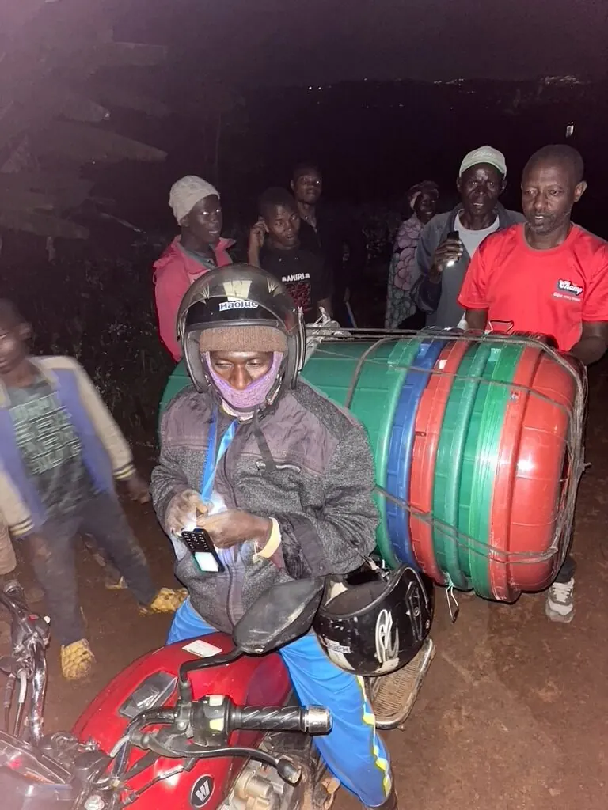
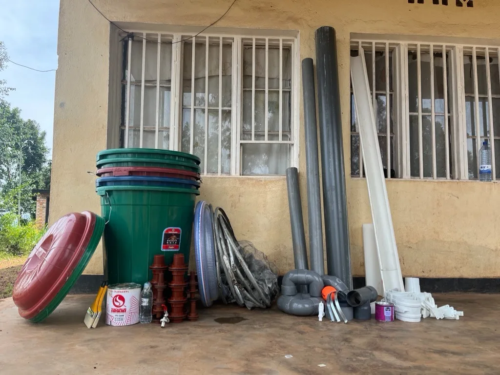
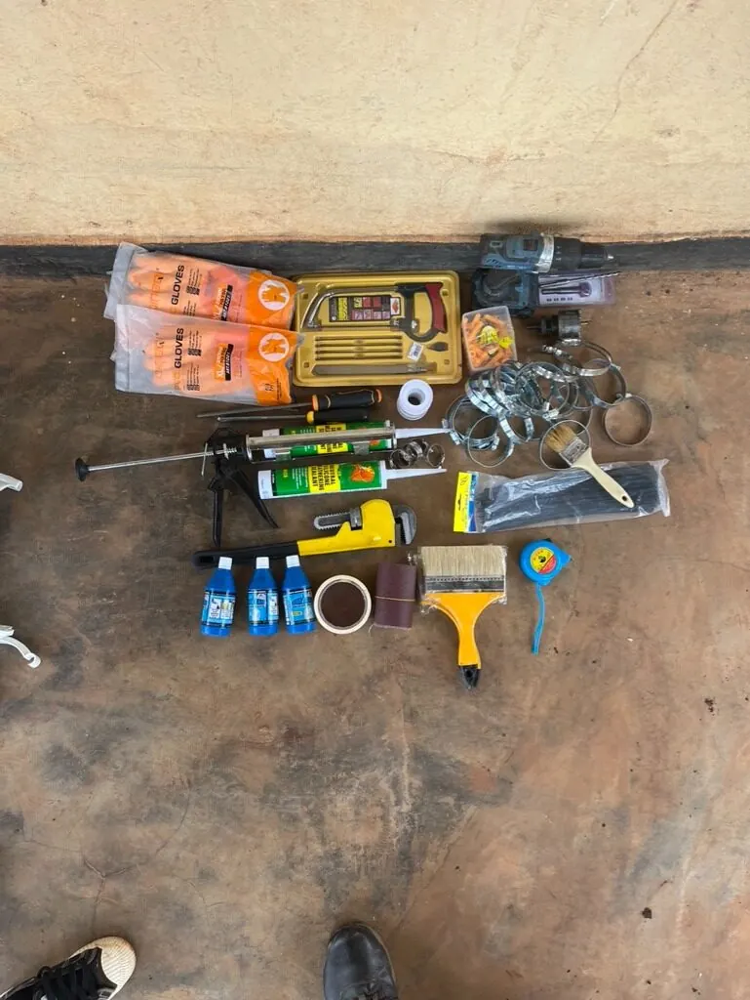
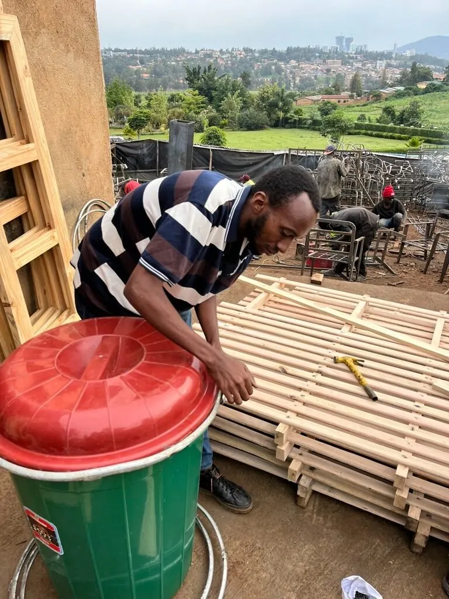
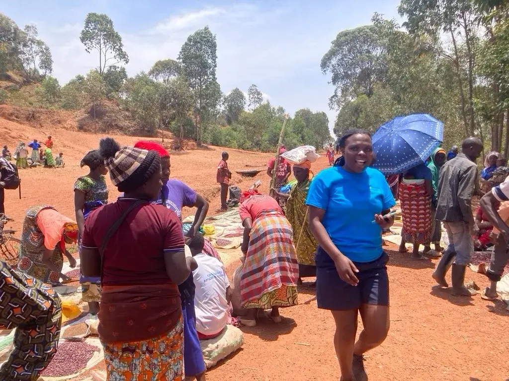
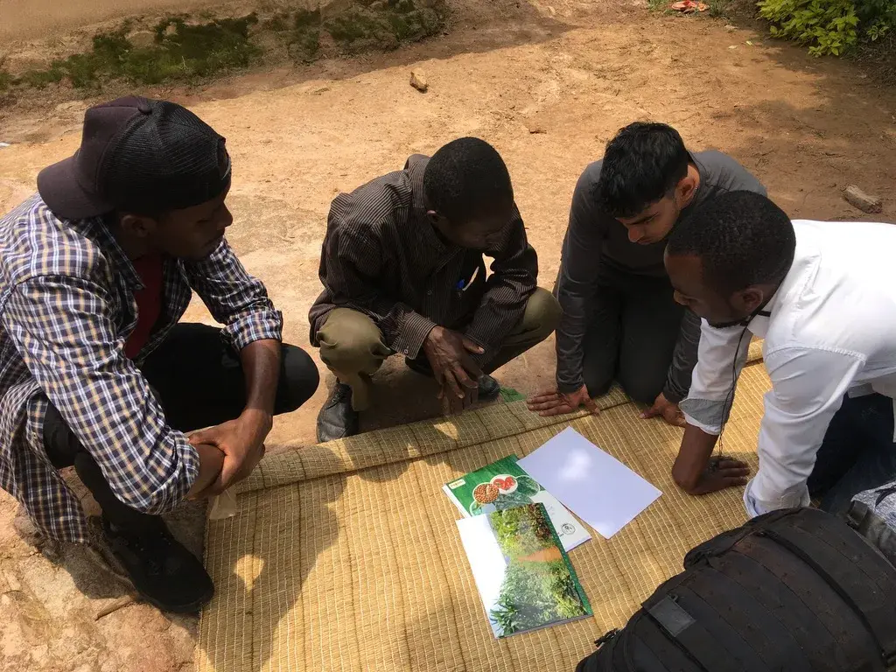
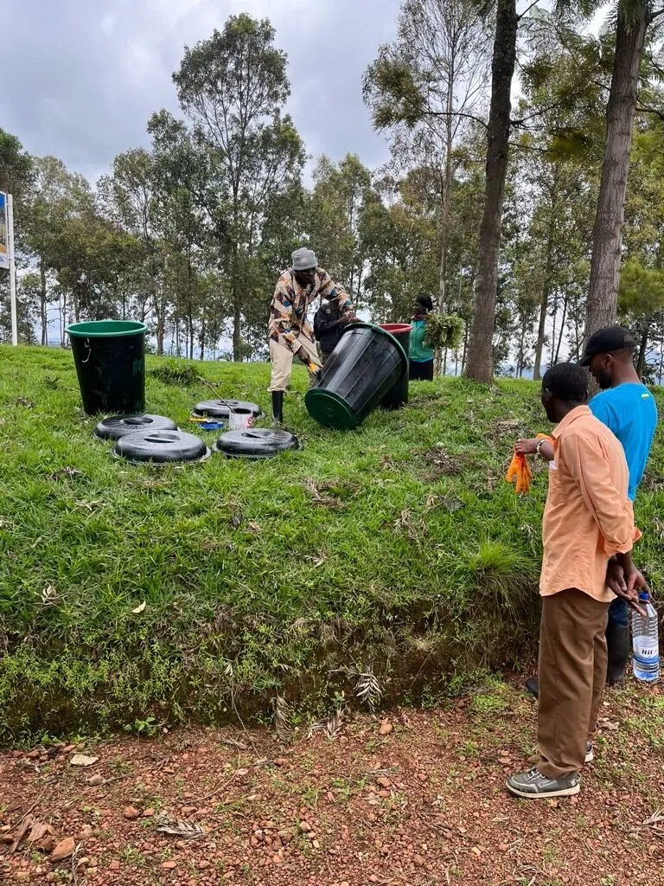

Four years of research in Gakenke District, a first system installed
in Minazi Sector, and a business case for Rwanda’s water sector.
Engineered at Imperial. Built in Rwanda.
Access to everyday water is the biggest limit on rural life in Rwanda.
That is what communities in Gakenke District told us, again and again,
across four years of interviews and wide-scale surveys.
Daily water use · Minazi Sector
3 to 20litres per person per day
Short of basic access, and far below the 50 L that
intermediate access, the level that supports good hygiene, calls for.
BasicIntermediate · 50 L
0102030405060
litres per person per day
How rural households use water
Most household water doesn’t need to be drinkable. Rain can supply it.
10% potable: drinking, cooking, dishwashing
90% non-potable: livestock, sanitation, hygiene
Landslides · Gakenke District
7deaths and 34.4 ha of crops lost in 2022
77houses lost in 2023
308people left homeless in 2023
The human cost
1.5h+a day walking to collect water
4 wkof work lost per adult each year to hygiene-related illness
Girlsmiss school because they fetch the water
The national cost
~2.4%of Rwanda’s GDP lost each year to water stress
7%drop in agricultural productivity, hitting food supply and income
Sources: e.quinox surveys and interviews in Gakenke, 2022 to 2025; WHO (2020) Domestic water quantity, service level and health; Dusabeyezu & Nsanzumukiza (2024); e.quinox 2026 partnership brief.
02 · Why it isn’t solved
Rainwater harvesting is encouraged in Rwanda, but rarely built.
Rain is abundant and the benefits of harvesting it are well understood.
Yet adoption is largely confined to public buildings.
2017The Rwanda Water Resources Board publishes a rainwater harvesting strategy. It has not been adopted into policy.
<1%of the water supply budget goes to rainwater harvesting in MININFRA’s 2023 water and sanitation policy.
2rainwater harvesting projects funded nationally, by FONERWA and the Ministry of Environment.
Bottleneck 1
Funding
There are no subsidies, so the whole cost lands on the families who need water most.
Amazi is 3.2× cheaper to install than a pumped tap connection. See the cost
Bottleneck 2
Deployment
Existing tanks are large and heavy. Villages away from the main roads are hard, or impossible, to reach.
Amazi breaks down into parts one person can carry, cutting delivery costs by 90%. See the system
03 · The system
A modular harvester that grows with the household.
Each 700 L system links several tanks in parallel, and families add
tanks as their needs and means allow. Every part is chosen for clean
water, security and easy maintenance.
Roof and guttering
Metal-sheet roofs feed a gutter and downpipe. Guttering sets the yield, so it is budgeted, not an afterthought.
First-flush diverter
Emptied after each dry period, so the dirtiest water goes to irrigation, not the tank.
Inlet filter
Stainless-steel mosquito mesh: unreactive, durable, and simple to inspect, clean and replace.
Quiet inlet
Water enters gently, without stirring up sediment that has settled.
Tanks in parallel
Joined by wire-reinforced, tamper-proof pipe into one theft-proof system that fills faster and overflows less.
Vents and lockable lids
Meshed air vent on every tank. Lid clasps take a padlock, and lids lift off for cleaning.
Tap at jerrycan height
Fills a 20 L jerrycan directly.
Gravel overflow
Excess water drains into gravel, so there is no standing water.
Flexible foundation
Cement, metal or wood, to suit each site.
Built to reach every village
−90%
Delivery costs 10,000 RWF per household, against 100,000 RWF for existing
1,000 L tanks. Components travel by moto and public transport, and can move with
a family if they are relocated.

Delivered by moto

Every part carried by hand

Installed with minimal tools

Assembled on site
Sourced in Rwanda
Bought locally, maintained locally.
Tanks are bought in Kigali, from a Tanzanian manufacturer. Pipes and guttering are made in Rwanda or imported from
neighbouring countries, and Rwandan manufacturers are exploring custom orders.
04 · The cost
Cheaper to install and cheaper to run than a pumped tap.
A private Amazi supply for one household in Gakenke, compared with a
communal pumped tap connection from WASAC.
3.2×
cheaper to install680,000 RWF against 2.2M RWF per household
3.8×
cheaper to runmonthly operating cost per household
Installation cost per household
Tanks
Accessories
Guttering
Foundation
Delivery
Amazi 700 Lhousehold harvester
680,000
Existing 1,000 Lhousehold harvester
680,000
WASACcommunal pumped tap
2,200,000 RWF
Amazi costs the same as today’s harvesters, but spends it differently.
Delivery falls from 100,000 to 10,000 RWF and foundations from 160,000 to
60,000, while more goes on the filters and fittings that keep water clean.
Breakdown (RWF)
Component
Amazi 700 L
Existing 1,000 L
Tanks
180,000
160,000
Delivery
10,000
100,000
Foundation materials
60,000
160,000
Accessories
300,000
130,000
Guttering
130,000
130,000
Total
680,000
680,000
Monthly operating cost (RWF)
WASAC tapwatchman and pump electricity
Amazimaintenance
3.8× less
No pumps, no electricity and no watchman. Running costs are mostly cleaning and occasional parts, which families can handle with minimal tools.
Not accounting for economies of scale, visitor pricing, or under-reporting of WASAC costs. The average Rwandan household is 4 people. Sources: e.quinox procurement data, 2024 and 2026; WASAC Gakenke, 2024.
05 · The yield
Over 40% of household water needs, nine months a year, in every province.
Modelled on 1991 to 2020 monthly rainfall for each province, at 50 L per
person per day and a conservative 50% capture rate. Metal-sheet roofs typically
capture 85 to 90%.
Share of water needs met by rain, by month
% of intermediate-access demand · 50% capture
Year average
Hover or tap the chart to read a month. Only June to August, the long dry season, fall below 40%.
Where it works
Every province, including the driest.
The Eastern Province gets the least rain, yet still averages 42% of needs met,
and it is home to over a quarter of Rwanda’s people. Our first system is in
Gakenke, in the Northern Province.
Province
Needs met (year avg)
Share of population
Rain per month
Western
60%
21.9%
117 mm
Southern
54%
22.7%
105 mm
Northern
51.5%
15.4%
100 mm
Kigali
44.5%
13.2%
87 mm
Eastern
42%
26.9%
82 mm
Population: Fifth Rwanda Population and Housing Census, 2022. Rainfall: Climate Change Knowledge Portal, 1991 to 2021.
06 · Water quality
Fit for every use except drinking.
Samples were tested in the University of Rwanda’s chemistry labs and compared
with Rwanda’s rural drinking-water quality framework.
Parameter
Amazi rainwater after first flush
Tank uncleaned for 7 months
WASAC tap Kigali
Standard treated water
Standard natural water
TurbidityFNU
1.81within
2.89
0.46
≤ 5
≤ 25
pH
5.83low
5.56
7.30
6.5 to 8.5
5.5 to 9.5
Total dissolved solidsmg/L
14.32within
7.73
46.1
≤ 700
≤ 1,500
ConductivityµS/cm
30.7within
16.47
94.7
≤ 1,500
≤ 2,500
Untreated rainwater is suitable for
Bathing
Livestock
Kitchen gardens
Washing homes and clothes
Drinking
Still being studied
Our samples were slightly acidic. Their pH sits below the treated-water
range but inside the natural-water range, and we are still investigating what
its low pH and conductivity mean in practice.
07 · Beyond water
What a tank on every home could change.
Knock-on effects the business case identifies, still to be quantified.
More water for livestock→more milk and meat→more income, less malnutrition
More water retained→less soil erosion→more productive farms
More water retained→fewer landslides and floods→fewer lives and homes lost
Water inside the home→less time and energy poverty→a more productive economy
For the network
Less load on WASAC.
Lower demand means lower pressure, fewer leaks, slower wear and less pumping
energy. Stored water also cushions families when piped supply is intermittent.
NST2
NDC 3.0
For the climate
A buffer against harder rain.
Rainfall is growing more intense and less predictable, raising landslide risk in
the Northern and Western provinces. Household storage cuts peak runoff, and the
system moves with families relocated from high-risk zones.
NDC 3.0
Vision 2050
NST2
08 · The timeline
From surveys to a first system, and on to scale.
2022
Surveys begin
First visit to Gakenke. Communities named everyday water access as their biggest limit.
2024
Return visit
Wide-scale surveys in Minazi Sector. Over 100 families and leaders met across both visits.
2025
Design
The modular 700 L system was designed at Imperial and its Rwandan supply chain mapped.
Now2026
First system and business case
Installed in Minazi to test deployability, supply chain and yield. The business case was presented in April.
Next
Scale
A multi-household pilot, and a place for rainwater harvesting in Rwanda’s water masterplans.
09 · The partnership
Who we work with, and who the case is for.
Working with
Imperial College LondonEngineering, design and the 2026 business case.
University of RwandaOur partner since 2009. Water-quality testing in the Chemistry Department.
MININFRAMinistry of Infrastructure. After our talks, we agreed to develop a business case for rainwater harvesting in policy.
WASAC GakenkeShared 2024 data on the cost of pumped supply.
Business case lead: Riccardo Casonato, Imperial College London.
Who needs to be at the table
Organisations the business case identifies for bringing rainwater harvesting into
Rwanda’s water supply.
RWBRwanda Water Resources Board
WASACWater and Sanitation Corporation
MININFRAInfrastructure
MoEEnvironment
REMAEnvironment Management Authority
MINAGRIAgriculture
FONERWARwanda Green Fund

Community meetings, Gakenke

Fieldwork with local partners

Community ownership
Get involved
Help us bring Amazi to scale.
The first system is in. The next step is a pilot across more households, and that takes partners.
Partners & funders
Collaborate with us.
Sponsors, NGOs, research groups and funding bodies: help take Amazi from one system to many.